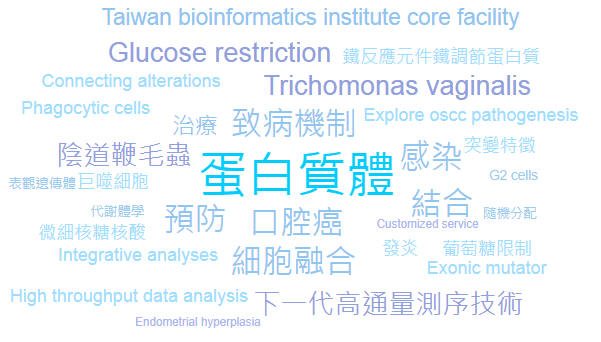

|

2026
Yeh YM, Cheng WH, Huang KY, Lee CC, Ong SC, Luo HW, Syu JW, Chiu CH, Huang PJ*, Tang P* (2026) Long-read transcriptomics corrects Trichomonas vaginalis intron annotations and refines transcript-end features. Parasites & Vectors 19(1):383 [https://doi.org/10.1186/s13071-026-07530-x]
Lei KF*, Reddy BSK, Luo HW, Chen MF, Tang P* (2026) Microfluidic-based analysis of Trichomonas vaginalis attachment and drug response using AI-based imaging algorithm. Advanced Biology 10(1):e00510
Yang C, Hsiao YC, Lee CC, Chu LJ, Yeh TS, Cheng PC, Tang P, Yu js (2026) MsTargetPeaker: a quality-aware deep reinforcement learning approach for peak identification in targeted proteomics. Molecular & Cellular Proteomics: 125(3):101523
2025 Luo HW, Ong SW, Syu JW, Tsai CY, Huang PJ, Lee CC, Yeh YM, Lin R, Chiu CH, Tang P* (2025) Viral load dependent cellular heterogeneity in Trichomonas vaginalis at single cell level. iScience 29(1):114260-114274.
Sullivan SA, Orosco JC, Callejas-Hernández F, Blow
F, Lee HY, Ranallo-Benavidez T, Peters A, Raidal S, Girard YA, Johnson CK,
Rogers K, Gerhold R, Mangelson H, Liachko I, Srivastava H, Chandler C, Berenberg
D, Bonneau RA, Huang PJ, Yeh YM, Lee CC, Hsuan Liu, Tang P, Chiu
CH, Chen TW, Schatz MC, Carlton JM (2025) Comparative genomics of the sexually
transmitted parasite Trichomonas vaginalis reveals relaxed and convergent
evolution and genes involved in spillover from birds to humans. Nature
Communications. 16:6487-6502 2024 Huang PJ, Weng YC, Huang KY, Lee CC, Yeh YM, Chen YT, Chiu CH, Tang P* (2024) ProFun: A web server for functional enrichment analysis of parasitic protozoan genes J Microbiol Immunol Infect 57(3):509-517.
2023 Cheng WH, Huang PJ, Lee CC, Yeh YM, Ong SC, Lin R, Ku FM, Chiu CH, Tang P*. (2023) Metabolomics analysis reveals changes related to pseudocyst formation induced by iron depletion in Trichomonas vaginalis. Parasites & Vectors 16:226
Lee CC, Lin YC, Pan TY, Yang CH, Li PH, Chen SY, Gao JJ, Yang C, Chu LJ, Huang PJ, Yeh YM, Tang P, Chang YS, Yu JS, Hsiao YC. (2023) HeapMS: An Automatic Peak-Picking Pipeline for Targeted Proteomic Data Powered by 2D Heatmap Transformation and Convolutional Neural Networks. Anal Chem. 95(42):15486-15496
2022 Lee CC, Huang PJ, Yeh YM, Li PH, Chiu CH, Cheng WH, Tang P*. (2022) Helminth egg analysis platform (HEAP): An opened platform for microscopic helminth egg identification and quantification based on the integration of deep learning architectures. J Microbiol Immunol Infect. (55)395-404.
Ong SC, Cheng WH, Ku FM, Tsai CY, Huang PJ, Lee CC, Yeh YM, Rada P, Hrdý I, Narayanasamy RK, Smutna T, Lin R. Luo HW, Chiu CH. Tachezy J*. Tang P* (2022) Identification of Endosymbiotic Virus in Small Extracellular Vesicles Derived from Trichomonas vaginalis. Genes (13)531
Rada P, Hrdý I, Zdrhal A, Narayanasamy RK, Smutna T,
Horáčková J, Harant K, Benes V, Ong SC, Tsai CY, Luo HW, Chiu CH, Tang P*, Tachezy J*. (2022) Double-stranded RNA viruses are released from Trichomonas
vaginalis inside small extracellular vesicles and modulate the exosomal cargo.
Front. Microbiol. 13:893692
2021
Chiu SF, Huang PJ, Cheng WH, Huang CY, Chu LJ, Lee CC, Lin HC, Chen LC, Lin WN,
Tsao CH, Tang P, Yeh YM, Huang KY. (2021) Vaginal Microbiota of the Sexually
Transmitted Infections Caused by Chlamydia trachomatis and Trichomonas vaginalis
in Women with Vaginitis in Taiwan. Microorganisms. 9(9):1864. 2020 Cheng WH, Huang KY, Ong SC, Ku FM, Huang PJ, Lee CC, Yeh YM, Lin R, Chiu CH. Tang P.* (2020) Protein cysteine S-nitrosylation provides reducing power by enhancing lactate dehydrogenase activity in Trichomonas vaginalis under iron deficiency. Parasit Vectors 13(1):477
2019 Lee CC, Huang PJ, Yeh YM, Chen SY, Chiu CH, Cheng WH, Tang P* (2019) Pathogenic Protist Transmembranome database (PPTdb): A web-based platform for searching and analysis of protist transmembrane proteins. BMC Bioinformatics 20(S13):382. [doi:10.1186/s12859-019-2857-7.]
Huang KY, Chen RM. Lin HC, Cheng WH, Lin HA, Lin WN, Huang PJ, Chiu CH, Tang P* (2019) Potential role of autophagy in proteolysis in Trichomonas vaginalis. J Microbiol Immunol Infect (52)336-344 [https://doi.org/10.1016/j.jmii.2018.11.002]
Huang PJ, Lin HH, Lee CC, Chiu LY, Wu SM, Yeh YM, Tang P, Chiu CH, Lyu PC, Tsai PC (2019) CoMutPlotter: a web tool for visual summary of mutations in cancer cohorts.BMC Med Genomics 12(S5):99 [doi:10.1186/s12920-019-0510-y.]
Tang WF, Huang RT, Chien KY, Tang P, Horng JT*. (2018) Large-Scale Proteomic Identification of Targets of Cellular miR-197 Downregulated by Enterovirus A71. J Proteome Res. [https://pubs.acs.org/doi/10.1021/acs.jproteome.8b00762]
2018 Huang PJ, Chiu LY, Lee CC, Yeh YM, Huang KY, Chiu CH, Tang P* (2018) mSignatureDB: a database for deciphering mutational signatures in human cancers. Nucleic Acids Research 46(D1)964-970 [doi: 10.1093/nar/gkx1133]
Huang PJ, Lee CC,
Chiu LY, Huang KY, Yeh YM, Yang CY, Chiu CH, Tang P.* (2018) VAReporter:
Variant reporter for cancer research of massive parallel sequencing. BMC
Genomics 19(S2):86. [doi: 10.1186/s12864-018-4468-5]
Liao HY, Chien CC, Tang P, Chen CC, Chen CT, Chen SC* (2018) The integrated analysis of transcriptome and proteome for exploring the biodegradation mechanism of 2, 4, 6-trinitrotoluene by Citrobacter sp. J Hazard Mater. 349(5)79–90 [doi: 10.1016/j.jhazmat.2018.01.039]
Li HP*, Peng CC, Wu CC, Chen CH, Shih MJ, Huang MY, Lai YR, Chen YL, Chen TW, Tang P, Chang YS, Chang KP, Hsu CL. (2018) Inactivation of the tight junction gene CLDN11 by aberrant hypermethylation modulates tubulins polymerization and promotes cell migration in nasopharyngeal carcinoma. J Exp Clin Cancer Res. 10;37(1):102. [doi: 10.1186/s13046-018-0754-y]
Chaou CH, Chen HH, Tang P, Yen AM, Wu KH, Hsiao CT, Chiu TF* (2018) Traffic Intensity of Patients and Physicians in the Emergency Department: A Queueing Approach for Physician Utilization. J Emerg 55(5):718-725.[https://doi.org/10.1016/j.jemermed.2018.07.024]
2017 Cheng WH, Huang KY, Huang PJ, Lee CC, Yeh YH, Ku FM, Lin R, Cheng ML, Chiu CH Tang P* (2017) γ-Carboxymuconolactone decarboxylase: a novel cell cycle-related basal body protein in the early branching eukaryote Trichomonas vaginalis. Parasites & Vectors 10:443.[doi 10.1186/s13071-017-2381-4]
Sablok G*, Chen TW, Lee CC, Yang C, Gan RC, Varotto C, Porta NL, Nayak KC, Huang PJ, Wegrzyn JL, Tang P*. (2017) ChloroMitoCU: Codon patterns across organelle genomes for functional genomics and evolutionary applications. DNA Research 24(3):327-332. [doi: 10.1093/dnares/dsw044]
Bradic M, Warring SD, Tooley GE, Scheid P, Secor WE, Land KM, Huang PJ, Chen TW, Lee CC, Tang P, Sullivan SA, Carlton JM* (2017) Genetic Indicators of Drug Resistance in the Highly Repetitive Genome of Trichomonas vaginalis. Genome Biol Evol. 9(6):1658-1672 [doi: 10.1093/gbe/evx110]
Xie YT, Gao JM, Wu YP, Tang P, Hide G, Lai DH, Lun ZR* (2017) Recombinant α-actinin subunit antigens of Trichomonas vaginalis as potential vaccine candidates in protecting against trichomoniasis. Parasites & Vectors 10(1):83 [doi: 10.1186/s13071-017-2009-8]
2016
Fang YK, Chien KY, Huang KY, Cheng WH, Ku FM, Lin R,
Chen TW, Huang PJ, Chiu CH, Tang P* (2016)
Lin CC, Lee CC, Lin SH, Huang PJ, Li HP, Chang YS, Tang P*, Chao M*.(2016) RNA recombination in Hepatitis delta virus: Identification of a novel naturally occurring recombinant. J Microbiol Immunol Infect. 2015 Nov 27. [doi: 10.1016/j.jmii.2015.10.013]
Chen CL, Tang P, Wu CC, Chung T, Yu JS, Chang YS, Chang PL, Chen YT* (2016) The urinary microparticle tumor-associated calcium-signal transducer 2 as a bladder cancer biomarker Urological Science 27(2):S2
Kao CM, Liao HY, Chien CC, Tseng YK, Tang P, Lin CE, Chen SC. (2016) The change of microbial community from chlorinated solvent-contaminated groundwater after biostimulation using the metagenome analysis. J Hazard Mater. 302:144-50.
Zhang JS, Sze DMY, Yung BYM, Tang P, Chen WJ, Chan
KH , Leung PHM* (2016) Distinct expression of interferon-induced protein with
tetratricopeptide repeats (IFIT) 1/2/3 and other antiviral genes between subsets
of dendritic cells induced by dengue virus 2 infection. Immunology
148(4):363-76.
Huang KY, Ku FM, Cheng WH, Lee CC, Huang PJ, Chu LCJ, Cheng CC, Fang YK, Wu HH, Tang P* (2015) Novel insights into the molecular events linking to cell death induced by tetracycline in the amitochondriate protozoan Trichomonas vaginalis. Antimicrob. Agents Chemother.59(11):6891-903
Chen WH, Huang KY, Huang PJ, Hsu JH, Fang YK, Chiu CH, Tang P* (2015) Nitric oxide maintains cell survival of Trichomonas vaginalis upon iron depletion. Parasites & Vectors 8:393
Huang PJ, Lee CC, Yeh YM, Huang KY, Gan RC, Chen TW, Lee CY, Yang ST, Liao CS, Liu H*, Tang P.* (2015) Vanno: A Visualization-aided Variant Annotation Tool. Hum Mutat 36(2):167-74
Chen TW, Gan RC, Chang YF, Liao WC, Wu TH, Lee CC, Huang PJ, Lee CY, Chen YYM, Chiu CH, Tang P* (2015) Is the whole greater than the sum of its parts? De novo assembly strategies for bacterial genomes based on paired-end sequencing. BMC Genomics 16:648
Fang YK, Huang KY, Huang PJ, Lin R, Chao M, Tang P* (2015) Gene expression analysis of cold-stress response in the sexually transmitted protist Trichomonas vaginalis.J Microbiol Immunol Infect. 48(6):662-75
Chen SJ, Liu
H, Liao CT, Huang PJ, Huang Y, Hsu A, Tang P, Chang YS, Chen HC, Yen Tc
(2015) Ultra-deep targeted sequencing of advanced oral squamous cell carcinoma
identifies a mutation-based prognostic gene signature. Oncotarget
6(20):18066-18080. Huang PJ, Lee CC, Tan BCM, Yeh YM, Chu JLC, Chen TW, Chang KP, Gan RC, Liu H, Tang P.* (2015) CMPD: Cancer Mutant Proteome Database. Nucleic Acids Res. 43:D849-55
Huang KY, Chen YYM, Fang YK, Cheng WH, Cheng CC, Chen YC, Wu TE, Ku FM, Chen SC, Lin R, Tang P*. (2014) Adaptive responses to glucose restriction enhance cell survival, antioxidant capability, and autophagy of the protozoan parasite Trichomonas vaginalis. BBA-Gen Subjects. 1840(1):53–64.
Chen TW, Li HP, Lee CC, Gan RC, Huang PJ, Wu TH, Lee CY, Chang YF and Tang P*. (2014) ChIPseek, a web-based analysis tool for ChIP data. BMC Genomics 13:539
Weng KF, Hung CT, Hiej PT, Li ML, Chen GW, Kung YA, Huang PN, Kuo RL, Chen LL, Lin JY, Wang RYL, Chen SJ, Tang P, Horng JT, Huang I, Wang JR, Qjcius D, Brewer G, Shih SR. (2014) A Cytoplasmic RNA Virus Generates Functional Viral Small RNAs and Regulates Viral IRES Activity in Mammalian Cells. Nucleic Acids Res. 42(20):12789-805.
Chou LF, Chen TW, Ko YC, Pan MJ, Tian YC, Chiu CH, Tang P, Hung CC, Yang CW (2014) Potential Impact on Kidney Infection: Whole Genome Analysis for Leptospira santarosai serovar Shermani. Emerging Microbes & Infections. 3:e82
Wang F, Chan LW, Law HK, Cho WC, Tang P, Yu J, Shyu CR, Wong SC, Yip SP, Yung BY.(2014) Exploring microRNA-mediated alteration of EGFR signaling pathway in non-small cell lung cancer using an mRNA:miRNA regression model supported by target prediction databases. Genomics 104(6 Pt B):504-11.
Yen HC, Li SL, Hsu C, Tang P. (2014) Interference of Co-amplified Nuclear Mitochondrial DNA Sequences on the Determination of Human mtDNA Heteroplasmy by Using the SURVEYOR Nuclease and the WAVE HS System Plos One 9(3)e92817
Wang FF, Chan W, Cho WC, Tang P, Yu J, Shyu CR, Tsui NBY,Wong SCC, Siu PM, Yip SP, Yung BYM ( (2015) Novel Approach for Co-expression Analysis of E2F1–3 and MYC Target Genes in Chronic Myelogenous Leukemia. Biomed Res Int. 2014:439840
Chang SH, Tang P, Yen CM, Chow KP, Wang LC*. (2014) A transcriptomic analysis on gene expressions in the infective third and pathogenic fifth larval stages of Angiostrongylus cantonensis. Parasitol Int. 63(1):42-48.
Chen KY,
Cheng CJ, Yen CM, Tang P, Wang LC*. (2014) Comparative studies on the
proteomic expression patterns in the third- and fifth-stage larvae of
Angiostrongylus cantonensis. Parasitol Res. 113(10):3591-600. 2013 Huang PJ#, Yeh YM#, Gan RCR, Lee CC, Chen TW, Lee CY, Liu H, Chen SJ, Tang P*. (2013) CPAP: Cancer Panel Analysis Pipeline. Hum Mutat. 34(10):1340-1346.
Huang KY, Shin JW, Huang PJ, Ku FM, Lin WC, Lin R, Hsu WM, Tang P*. (2013) Functional profiling of the Tritrichomonas foetus transcriptome and proteome. Mol. Biochem. Parasitol. 187:60– 71.
Yeh YM, Huang KY, Gan RRC, Huang HD, Wang TC, Tang P*. (2013) Phosphoproteome profiling of the sexually transmitted pathogen Trichomonas vaginalis. J. Microbiol. Infect. Immunol. 46:366-373.
2012 Chen CL#, Lai YF#, Tang P#, Chien KY, Yu JS, Tsai CN, Chen HW, Wu CC, Chung T, Hsu CW, Chen CD, Chang YS, Chang PL, Chen YT* (2012) Comparative and targeted proteomic analyses of urinary microparticles from bladder cancer and hernia patients. J. Proteome Res. 11(12):5611-29.
Horváthová L, Šafaříková L, Basler M, Hrdý I, Campo NB, Shin JW, Huang KY, Huang PJ, Lin R, Tang P*, Tachezy J*. (2012) Transcriptomic identification of iron-regulated and iron-independent gene copies within the heavily duplicated Trichomonas vaginalis genome. Genome Biol. Evol. 4: 905-917.
Huang KY, Huang PJ, Ku FM, Lin R. Alderete JF*, Tang P* (2012) New perspectives on the responses of Trichomonas vaginalis following adherence to fibronectin by comparative transcriptomic and proteomic analyses. Infect. Immun. 80(11):3900-3911.
Chen TW, Gan RCR, Wu TH, Huang PJ, Lee CY, Chen YYM, Chen CC and Tang P*. (2012) FastAnnotator: an efficient transcript annotation web tool. BMC Genomics Genomics 13:Suppl 8, S9
Chen TW, Gan RRC, Wu TH, Lin WC, Tang P*.(2012) VIP DB -a viral protein domain usage and distribution database. Genomics 100:149-156.
Geng J, Chiu CH, Tang P, ChenY, Shieh HR, Hu SN, and Chen YM*. (2012). Complete genome and transcriptomes of Streptococcus parasanguinis FW213: phylogenic relations and potential virulence mechanisms. PLoS ONE 7(4): e34769.
Yu D, Wang Y, Fang X, Hu S, Tang P, Fu Y* (2012) Acquisition of hydrogenosomal presequences: examples from Trichomonas vaginalis. FEMS Microbiology Letters 330(2):127-31.
Huang PJ, Lin WC, Chen SC, Lin YH, Sun CH, Lyu PC, Tang P* (2012) Identification of putative miRNA from the deep-branching unicellular flagellates. Genomics 99(2):201-207
|